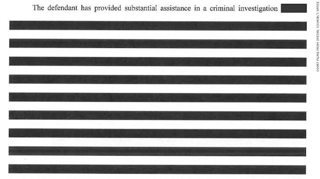

2019-04-01 08:00
On March 24th Trump’s Attorney General — and we should take the phrase literally, since William Barr has even less integrity and closer ties to Trump than Jeff Sessions — issued a four-page summary of Special Counsel Robert Mueller’s report. In it, Barr quotes Mueller: “The investigation did not establish that members of the Trump Campaign conspired or coordinated with the Russian government in its election interference activities.” Barr also writes: “The Special Counsel did not find that the Trump campaign, or anyone associated with it, consired or coordinated with the Russian government [to influence the election].” Trump took a victory lap, claiming “complete and total exoneration.
Did not establish. Did not find. Despite the fact that a large number of close Trump associates — including Michael Cohen, Michael Flynn, Rick Gates, Paul Manafort, George Papadopoulos, Richard Pinedo, Roger Stone, and Alex van der Zwaan — were convicted (or in Stone’s case, indicted) for crimes related to collusion with over 30 Russians and 3 corporations that meddled in the 2016 election.
From the kid gloves applied to the president, one must conclude that ours is a broken legal system designed primarily to incarcerate and kill brown people with broken tail lights — but one that provides concierge service to rich white men — to the point that even treason can be overlooked.
I am always a bit suspicious of other people’s summaries, preferring to read an original myself. If you have ever read a Yelp review, you know what I’m talking about. If you have ever read an Amazon review, you recognize a fake when you see one — for example, as this Fakespot analysis of Trump’s “Art of the Deal” shows. Or, if you have actually read American history, you would be surprised to learn that the Cliff Notes version of American slavery says that “slaves sometimes had better physical living conditions than poor whites.” Or you might have seen James Agee’s gushing review of D.W. Griffith’s KKK film “Birth of a Nation.”
And we should be especially suspicious of any summary from an underling of Donald Trump, a pathological liar who will shortly celebrate his 10,000th lie.
But William Barr’s summary also notes that “the Special Counsel therefore did not draw a conclusion — one way or the other — as to whether the examined conduct constituted collusion.”
In fact, Barr adds: “For each of the relevant actions investigated, the report sets out evidence on both sides of the question and leaves unresolved what the Special Counsel views as ‘difficult issues’ of law and fact concerning whether the President’s actions and intent could be viewed as obstruction. the Special Counsel states that ‘while this report does not conclude that the President committed a crime, it also does not exonerate him.’”
For this reason I am patiently waiting for the actual 380-page Mueller report — though I hope it doesn’t look like Michael Flynn’s sentencing document:

In the end, it will be up to the House of Representatives, with its slim centrist Democrat majority, to decide whether to rake the president over well-deserved coals and, if necessary, to compel Robert Mueller to discuss his findings and explain any redactions. I am not hopeful Pelosi will rise to the occasion.
But I will try to be patient.